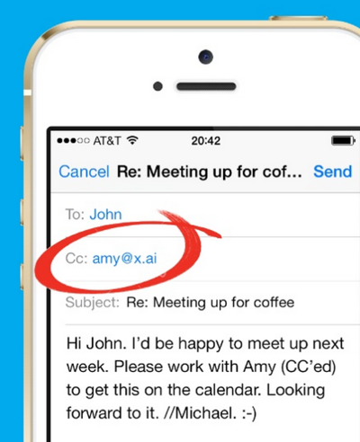

@markwatsonatx
Bots
github.com/markwatsonatx/presentation-botsWhat is a bot?
An application or service that users interact with through the exchange of messages.
Characteristics of Building a bot
Typically built on top of a messaging platform.
Little or no user interface development required.
May or may not simulate a conversation.
Examples
Order Tacos

Appeal your parking ticket

Schedule a meeting
Bot Platforms
Facebook Messenger
Kik
Skype
Slack
Twilio
Bot Frameworks
Microsoft Bot Framework
Botkit
Smooch.io
Conversational/Natural Language Processing Platforms
api.ai (Google)
wit.ai (Facebook)
Watson Conversation
Basic Bot Architecture

Add Data Services & APIs

Add NLP/Conversation

Recipe Bot
Conversational bot that provides recipe suggestions and instructions based on ingredients or cuisines
Slack Bot User


Start a conversation with the sous-chef bot by sending it a direct message:

Tell the sous-chef what you would like to do:

Reply to the sous-chef whether or not you would like to use specific ingredients:

Specify the ingredients or cuisine you would like to cook with:

Select the recipe you’d like to cook, and sous-chef will tell you how:

Recipe Bot Architecture

How It Works
Slack Config

Read messages from Slack Real Time Messaging API
while self.running:
if self.slack_client.rtm_connect():
while self.running:
slack_output = self.slack_client.rtm_read()
message, message_sender, channel = self.parse_slack_output...
if message and channel:
self.handle_message(message, message_sender, channel)
Forward messages to Watson Conversation
watson_response = self.conversation_client.message(
workspace_id=self.conversation_workspace_id,
message_input={'text': message},
context=state.conversation_context
)
Handle the Watson Conversation response
if 'is_ingredients' in state.conversation_context.keys()...:
response = self.handle_ingredients_message(state, message)
elif 'is_selection' in state.conversation_context.keys()...:
response = self.handle_selection_message(state)
Query Spoonacular for Recipes
matching_recipes = self.recipe_client.find_by_ingredients(ingredients)
Send the message to the user
self.slack_client.api_call(
"chat.postMessage",
channel=channel,
text=response,
as_user=True
)
Watson Conversation
Watson Conversation combines a number of cognitive techniques to help you build and train a bot - defining intents and entities and crafting dialog to simulate conversation.
Watson Conversation Concepts
Intents
Entities
Dialog
Context
Intents

Start Cooking Intent

Entities

System Entities

Dialogs

Dialogs

Dialogs

Dialogs

Context
Passed between Watson Conversation and application
Keeps track of current dialog in the conversation
Context
# send message to watson conversation
watson_response = self.conversation_client.message(
workspace_id=self.conversation_workspace_id,
message_input={'text': message},
context=state.conversation_context
)
# update conversation context
state.conversation_context = watson_response['context']
Context
Add custom variables to the context for use in your bot
Context


Context
if 'is_ingredients' in state.conversation_context.keys()
and state.conversation_context['is_ingredients']:
response = self.handle_ingredients_message(state, message)
elif watson_response['entities']
and watson_response['entities'][0]['entity'] == 'cuisine':
cuisine = watson_response['entities'][0]['value']
response = self.handle_cuisine_message(state, cuisine)
Recipe Bot Review
Slack Bot User
Conversational
State needs to be managed
No persistent storage
Recipe Bot Persistence
Cache 3rd Party API Calls
Track user habits
Provide a more personal experience
Recipe Bot with Cloudant

Recipe Bot with Cloudant
{
"_id": "971e1fb0322f12cfceac427a1f8a674e",
"name": "U3XXXXXXX",
"ingredients": [{
"name": "tomatoes",
"count": 9
}],
"cuisines": [{
"name": "italian",
"count": 5
}],
"recipes": [{
"id": "833235",
"title": "Sliced Cucumber and Tomato Salad",
"count": 3
}]
}
Favorite Recipes

Favorite Intent

Favorite Dialog

Context
if 'is_favorites' in state.conversation_context.keys()
and state.conversation_context['is_favorites']:
response = self.handle_favorites_message(state)
def handle_favorites_message(self, state):
recipes = self.recipe_store.find_favorite_recipes_for_user...
Chatbots in Production
Design Patterns, User Testing, and Lessons Learned
SXSW Event Finder
Find upcoming Interactive, Music, & Film events at SXSW
Display results on a map
Web app with mobile support
SMS support via Twilio
Demo
Architecture
Defining Context Actions
Simplified development
Track conversations
Actions in Watson Conversation

Handling Actions in Code
if (action == 'search_topic') {
return this.handleSearchInteractiveTopicMessage(...);
}
else if (action == 'xxx') {
...
}
else {
return this.handleGenericActionMessage(...);
}
Custom Actions
this.logDialog(state, "search_topic", message);
return this.eventStore.findInteractiveEventsByTopic(...);
Generic Action
this.logDialog(state, action, message);
return responseFromWatsonConversation;
Stats
~350 Installs
~2,500 Conversations
* Every conversation stored in Cloudant
Sample Conversation
"dialogs": [
{
"name": "get_music_topic",
"message": "Music",
"date": 1489343583979
},
{
"name": "search_music_topic",
"message": "Brass bands",
"date": 1489343600650
}
]
Sample Conversation
"dialogs": [
{
"name": "hello",
"message": "Whats going on now?",
"date": 1489248407944
},
{
"name": "search_free_form",
"message": "Cool places to have a lunch",
"date": 1489248430678
},
{
"name": "search_free_form",
"message": "Close to downtown",
"date": 1489248440882
}
]
Where It Worked
Better than the official SXSW app
People could take it with them
Where it Didn't
Chat was too specialized
People had high expectations
Lessons Learned
Be clear about what your bot can and cannot do
Track all conversations to monitor and improve your user experience
Treat your bot like you'd treat your UX
More Info
@InterConnect
Ask Me Anything
Wed. 2:30-5:00
DevZone
bluemix.com
medium.com/ibm-watson-data-lab
github.com/markwatsonatx/presentation-bots